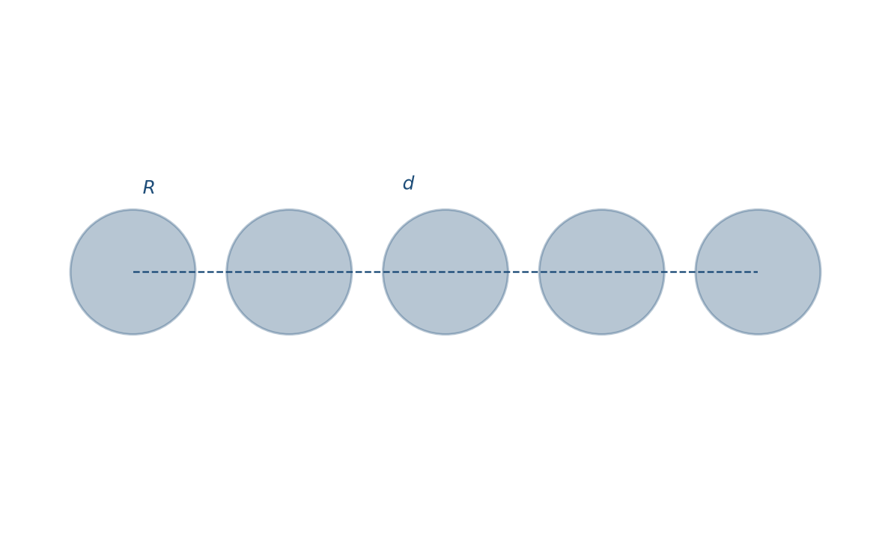
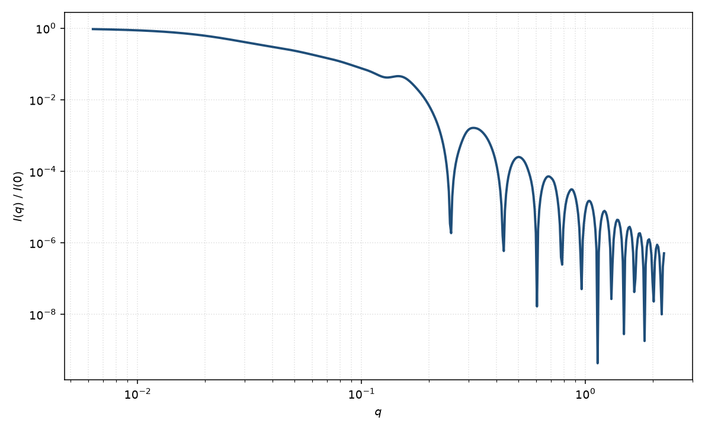

直线珍珠串
linear pearls
适用场景
直线珍珠串把若干相同（或相近）的球沿一条直线排列，球心距 $d\ge 2R$。适用于刚性连接的球状蛋白质重复单元、短的胶束串、以及尚未弯曲成珍珠项链（可有持久长度）的寡聚体。若链可弯、有键角涨落，应改用圆柱类中的珍珠项链。
相对单个球，低 $q$ 的 $R_g$ 增大，并在 $q\sim 2\pi/d$ 出现串内干涉调制。球数 $N$ 很少时调制宽而弱。
物理图像
取向平均后，相同珠粒的形式因子是单球 $P_1(q)$ 乘以 Debye 型干涉因子 $\frac{1}{N^2}\sum_{i,j}\frac{\sin(qd_{ij})}{qd_{ij}}$。这是珠粒链形式因子在键角为 $180^\circ$、无柔性时的极限。
示意图


核心公式
$$P(q)=P_{\mathrm{sphere}}(q;R)\cdot \frac{1}{N^2}\sum_{i=1}^{N}\sum_{j=1}^{N}\frac{\sin(q d_{ij})}{q d_{ij}},\qquad d_{ij}=|i-j|\,d.$$$P_{\mathrm{sphere}}$ 为 Rayleigh 球形式因子。若珠粒衬度或半径不同，应以振幅 $F_i$ 取代，干涉项变为 $F_i F_j \mathrm{sinc}(qd_{ij})$。
参数表
| 参数 | 符号 | 含义 | 单位 | 典型范围 |
|---|---|---|---|---|
| 珠半径 | $R$ | 单个球的半径 | Å | 10–100 Å |
| 球心距 | $d$ | 相邻珠中心距，$d\ge 2R$ | Å | 2$R$–数个 $R$ |
| 珠数 | $N$ | 直线上的球数目 | 无量纲 | 2–20 |
| 衬度 | $\Delta\rho$ | 珠相对溶剂的 SLD 差 | Å$^{-2}$ | 组成决定 |
拟合注意
$N$ 与 $d$ 共同决定整体 $R_g$：$R_g^2\approx R^2\cdot 3/5 + d^2(N^2-1)/12$。低 $q$ 只能给出一个组合，需要中 $q$ 干涉或独立的 $N$（色谱、电镜）。
取向：溶液中直线串各向同性取向平均已包含在 sinc 项中；若样品剪切取向，干涉变为柱对称，本页公式不够。磁性珠串的磁偶极相互作用可能改变间距，磁 SLD 仍按单珠 Rayleigh 进入 $F_{\mathrm{mag}}$。
相近模型
- 珍珠项链 — 允许弯曲与持久长度的珠粒链。
参考文献
- Pedersen, J. S. Analysis of small-angle scattering data from colloids and polymer solutions: modeling and least-squares fitting. J. Appl. Cryst. 1997, 30, 339–354. DOI: 10.1107/S0021889897002532
- Guinier, A.; Fournet, G. Small-Angle Scattering of X-rays. Wiley: New York, 1955.（干涉因子 $\sin(qr)/qr$ 的取向平均）